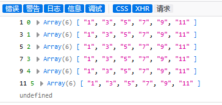
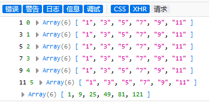
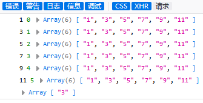
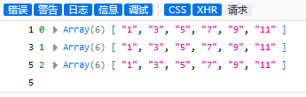
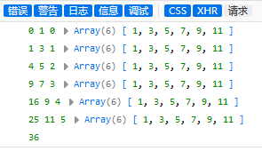
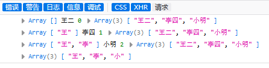
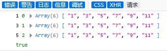
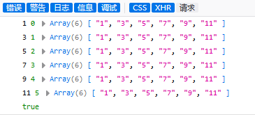

在数组的方法中有一组用于遍历数组的方法。有 forEach()、map()、filter()、find()、reduce()、some()、every()。
他们的共同特征是:
1. 它们都自带遍历（只要调用这个方法就会自动循环数组中的每一项）
2. 它们都不会改变原数组，调用方法后产生的结果在返回值中
3. 它们的参数都是一个函数，这个函数都有三个参数（只有第一个“项”是必填的）
forEach((item,index,default)=>....) 1. item:代表这一次循环出来的项
2. index:代表这一次循环出来的相前项的索引
3. default:代表的是当前用于循环的数组
1、forEach()方法
作用：循环每一项（没有其它特殊作用）
参数：一个函数
返回值：“undefined” （因为仅仅只是循环每一项，所以返回值就是"undefined"）
例如：
let arr = ["1","3","5","7","9","11"]
let x = arr.forEach((a,i,t)=>{ //a : 代表这一次循环出来的项 ; i : 代表这一次循环出来的相前项的索引; t : 代表的是当前用于循环的数组
console.log(a,i,t)
return a
})
console.log(x)
输出结果为：

2.、map() 方法
作用：更新数组（循环并更新每一项，最后返回所有项的数组）
参数：是一个函数
返回值：更新后的数组
例如：
let arr = ["1","3","5","7","9","11"]
let x = arr.map((a,i,t)=>{ //a : 代表这一次循环出来的项 ; i : 代表这一次循环出来的相前项的索引; t : 代表的是当前用于循环的数组
console.log(a,i,t)
return a*a
})
console.log(x)输出结果为：

3.、filter() 方法
作用：过滤数组（循环并查找满足条件的项，最后返回所有满足条件的项的数组）
参数：是一个函数
返回值：满足条件项的数组 （如果没有满足条件的项则返回空数组）
例如：
let arr = ["1","3","5","7","9","11"]
let x = arr.filter((a,i,t)=>{ //a : 代表这一次循环出来的项 ; i : 代表这一次循环出来的相前项的索引; t : 代表的是当前用于循环的数组
console.log(a,i,t)
return a == 3 //此处的等于并非绝对等于“===” ，若想完全相同应该换为绝对等于
})
console.log(x)输出结果为：

4、find()方法
作用：查找满足条件的第一项
参数：一个函数
返回值：满足条件的那一项（不是满足条件的项的索引,如果没有满足条件的项，则返回“undefined”）
例如：
let arr = ["1","3","5","7","9","11"]
let x = arr.find((a,i,t)=>{ //a : 代表这一次循环出来的项 ; i : 代表这一次循环出来的相前项的索引; t : 代表的是当前用于循环的数组
console.log(a,i,t)
return a == 5 //此处的等于并非绝对等于“===” ，若想完全相同应该换为绝对等于
})
console.log(x)输出结果为：

5、reduce()方法
作用：可以在对项与项进行之间进行相关操作，最后得到一个总和的结果
参数：（第一个参数（一个函数），第二个参数（初始值））
一个函数的参数（a,i,t,arr1）a ：初始值（可以理解为reduce的第二个参数，每次循环的返回结果，给reduce的第二个参数从新赋值） i ：循环的那一项 t ：索引 arr1：当前用于循环的数组
例如：
var arr = [1,3,5,7,9,11]
let x = arr.reduce((a,i,t,arr1)=>{
console.log(a,i,t,arr1)
return a + i
},0)
console.log(x)输出结果为：

也可以利用reduce()方法来返回姓氏等作用
例如：
var arr3 = ["王二","李四","小明"]
let y = arr3.reduce((a,i,t,arr1)=>{
console.log(a,i,t,arr1)
return a.concat(i[0])
},[])
console.log(y)输出结果为：

6、some()方法
作用：查找满足条件的项，如果有一个则直接返回true（并不会继续往下执行），否则返回false
参数：一个函数
返回值：true/false (如果数组为空，返回false，every函数则返回true)
例如：
let arr = ["1","3","5","7","9","11"]
let x = arr.some((a,i,t)=>{ //a : 代表这一次循环出来的项 ; i : 代表这一次循环出来的相前项的索引; t : 代表的是当前用于循环的数组
console.log(a,i,t)
return a == 5 //此处的等于并非绝对等于“===” ，若想完全相同应该换为绝对等于
})
console.log(x)输出结果为：

7、every()方法
作用：查找每一项是否满足条件，如果有一项未满足则返回直接false（并不会继续往下执行），否则返回true
参数：一个函数
返回值：true/false (如果数组为空，返回true，some方法则返回false)
例如：
let arr = ["1","3","5","7","9","11"]
let x = arr.some((a,i,t)=>{ //a : 代表这一次循环出来的项 ; i : 代表这一次循环出来的相前项的索引; t : 代表的是当前用于循环的数组
console.log(a,i,t)
return a%2 == 1 //此处的等于并非绝对等于“===” ，若想完全相同应该换为绝对等于
})
console.log(x)输出结果为：
